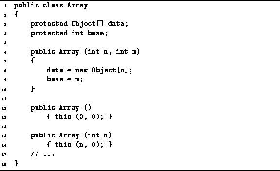

Data Structures and Algorithms
with Object-Oriented Design Patterns in Java
Data Structures and Algorithms
with Object-Oriented Design Patterns in Java
Program  gives the code for three Array class constructors.
The main constructor (lines 6-10) takes two arguments, n and m,
which represent the desired array length
and the lower bound for array indices, respectively.
This constructor allocates an array of Objects of length n
and sets the base field to m.
The remaining two constructors (lines 12-16) simply call the main constructor
by invoking the this method.
These constructors simply provide default values for m and n.
gives the code for three Array class constructors.
The main constructor (lines 6-10) takes two arguments, n and m,
which represent the desired array length
and the lower bound for array indices, respectively.
This constructor allocates an array of Objects of length n
and sets the base field to m.
The remaining two constructors (lines 12-16) simply call the main constructor
by invoking the this method.
These constructors simply provide default values for m and n.

Program: Array constructors.
In Java, when an array is allocated, two things happen. First, memory is allocated for the array object and its elements. Second, each element of the array is initialized with the appropriate default value (in this case null).
For now, we shall assume that the first step takes a constant amount of time. Since there are n elements to be initialized, the second step takes O(n) time. Therefore, the running time of the main constructor is O(n).
 Copyright © 1998 by Bruno R. Preiss, P.Eng. All rights reserved.
Copyright © 1998 by Bruno R. Preiss, P.Eng. All rights reserved.